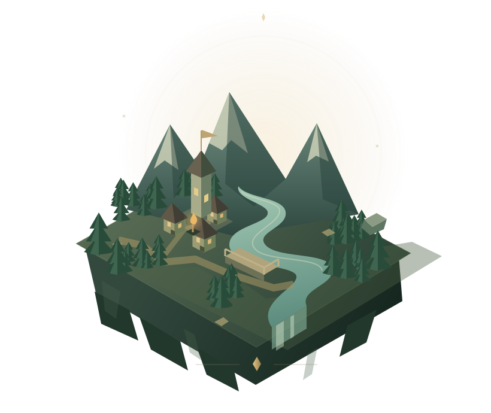

БРАУЗЕРНА ОНЛАЙН RPG
Твій шлях.
Твоя легенда.
За брамою села — незвідані землі. Обери зброю, знайди союзників і залиш свій слід у світі HoMoW.
ГратиПросто у браузері. Твоя пригода вже чекає.

Світ відкривається
з кожним кроком.
12кластерів для дослідження
35рангових зіль для пригод
33досягнення на твоєму шляху